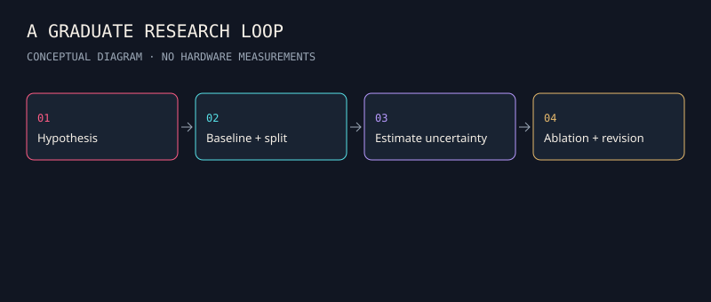

180 research dossiers
Keep every project. Push each question further.
150 original HELIOS missions + 30 frontier proposals. Models, datasets, experiment contracts, sources and challenges live in each dossier.
Assessment track

Keep every project. Push each question further.
150 original HELIOS missions + 30 frontier proposals. Models, datasets, experiment contracts, sources and challenges live in each dossier.
